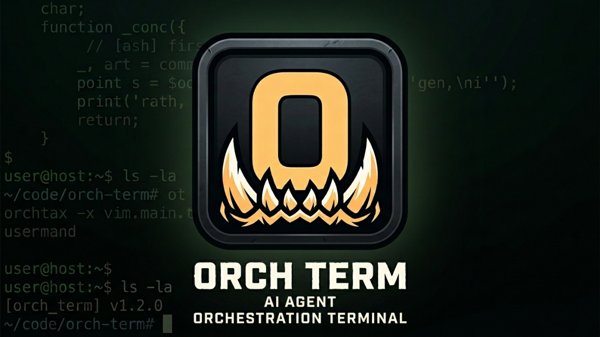

##한 창에 세 가지
터미널·에디터·브라우저를 하나의 워크스테이션에서.
터미널
ConPTY 세션, 복사/붙여넣기, WebGL 렌더러, 셸 종료 시 탭 자동 닫기.
코드 에디터
파일 외부 변경 자동 리로드, CRLF 처리. 탐색기에서 바로 열기.
인앱 브라우저
Tauri 네이티브 자식 웹뷰(iframe 아님) — 링크·뒤로/앞으로가 자연스럽게 동작.

여러 AI 코딩 에이전트를 한 곳에서 부려 조율하는 멀티에이전트 터미널 워크스테이션.
이름값 그대로 — Orch term의 핵심은 로컬 멀티에이전트 control plane입니다.
대화 중인 AI가 다른 AI(claude·codex·agy)를 워커로 띄워 컨텍스트 유지 다중 턴으로 협업시킵니다. commander/worker · 지휘자 대시보드.
외부 프로그램이 로컬 API(POST /run, OpenAI 호환)로 AI를 호출합니다. 단발 호출도, session으로 멀티턴 대화도. machine-to-machine 자동화에 적합.
터미널·에디터·브라우저를 하나의 워크스테이션에서.
ConPTY 세션, 복사/붙여넣기, WebGL 렌더러, 셸 종료 시 탭 자동 닫기.
파일 외부 변경 자동 리로드, CRLF 처리. 탐색기에서 바로 열기.
Tauri 네이티브 자식 웹뷰(iframe 아님) — 링크·뒤로/앞으로가 자연스럽게 동작.
전환 가능한 독립 레이아웃(타이틀바 칩), Space별 분할 트리/탐색기, 실시간 영속화+복원. Ctrl+1‥9.
바이너리 분할 트리, 패널 최대화(Shift+Esc), 탭 인라인 rename.
에이전트(chrome-devtools-mcp)의 브라우징을 인앱 패널에 실시간 미러.
멀티 프로젝트, 키보드 네비, 멀티셀렉트, 인라인 생성/rename, 드래그&드롭.
비활성 탭에 에이전트 완료(초록)/입력 대기(주황) 배지. 알림에서 전체 메시지를 확인하고 클릭하면 해당 탭으로 바로 이동.